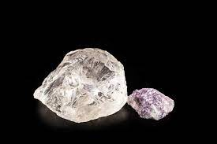

sembolü Li atom numarası 3 olan kimyasal elementtir.
1. grupta alkali metal olarak bulunur ve yoğunluğu en düşük olan metaldir.
Lityum doğada saf halde bulunmaz.
Yumuşak ve gümüşümsü beyaz metaldir. Havada bulunan oksijenle reaksiyona giren lityum, lityum oksit (Li2O) oluşturur.
Bu oksitlenme reaksiyonunu engellemek için yağ içinde saklanır.
Hava ve su tarafından hızlı bir şekilde oksitlenip kararır ve lekelenir. Lityum metali doldurulabilir pillerde (örnek olarak cep telefonu ve kamera pili) ve ağırlığa yüksek direniş göstermesi sebebiyle alaşım olarak hava taşıtlarında kullanılır. Li+ iyonunun nörolojik etkilerinden dolayı, lityumlu bileşikler farmakolojik olarak sakinleştiricilerde kullanılır.
ana sayfaya dön
